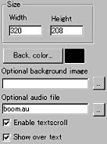
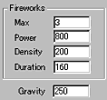

|
This applet adds a fireworks animation to a selected
image as either a foreground or background layer. The image may
be very dark or solid black in colour.
[For more technical
information about the available parameters, click here.]
Most parameters are self-explanatory and you can
always see brief description of each parameter by moving the mouse
pointer over the wizard.
 |
First, decide the applet size (Width,
Height) and set background colour or a background image. You
can optionally set an audio file which is played for fireworks'
lunch sound effect. The sound format must be in *.au format.
You may want to activate text scroll function displayed either
under or over fireworks animation. |
 |
The number of fireworks lunched
at one time varies, but you can limit the maximum number of
them by "Max" parameter. Next, set the explosion
"Power." Higher values produce faster diffusion
of fired particles (dots). |
Then, at fireworks "Density" parameter, you determine
the number of fired particles in each explosion. Higher values require
higher CPU power and slow down the effect, but more realistic.
You can set the timing of each firework's lunch at "Duration"
parameter in milliseconds.
Finally, "Gravity" parameter controls the speed
of fall of fired particles.
Proceed to the textscroll
menu if you have checked the textscroll box; otherwise go to
the expert menu.
|